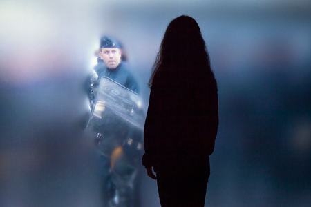

Description du projet
Écran noir sur lequel une personne pose une main. Son empreintes se transforme en personnage et tente de sauter le mur afficher à l'écran mais n'y arrive pas car le mur est trop haut. Un deuxième personnage arrive et l'aide en lui fessant la courte échelle. Arriver en haut, le premier tend sa main au deuxième et l'aide à grimper le mur et à passer de l'autre coter. On voit alors l'autre coter du mur ou il est marqué "peut importe qui tu est et d’où tu viens, ensemble nous somme plus fort". Les deux personnes se serrent la main et partent ensemble. Le style serai dessins à main lever un peu brouillons, sans trop de details. L'œuvre serai dans les gare et les aéroport. Les personnage serons vide, juste les contour seront visible.
Inspiration

'niform' est une installation interactive. Dans une grande salle noire, occupant tout un mur, une image
fait face aux spectateurs; au premier abord, elle est fixe et totalement floue. Un groupe d’une
vingtaine d’hommes, représenté à l’échelle 1, la compose. Uniformisée par le flou, cette image l’est
aussi par l’uniformité vestimentaire de ce cordon de policiers en tenue antiémeute. Suivant leurs
déplacements, les spectateurs agissent sur la mise au point de l’image ; à mesure qu’ils s’en approchent
et suivant la forme de leurs corps, chaque partie de l’image qui leur fait face devient progressivement
nette. À moins de cinquante centimètres de l’écran, un spectateur fait le point devant lui sur l’un des
représentants des forces de l’ordre. L’image n’a pas qu’une seule zone de netteté, une seule profondeur
de champ, mais plusieurs à la fois. Ces profondeurs sont localisées, individualisées et varient selon la
position des différents spectateurs. À partir d’une image uniforme, chaque spectateur, par son avancée,
révèle un homme singulier, un individu auquel il fait face.
Cette oeuvre ma donnée l’idée de l’uniformiter des personnages, comme appartenant a une seule et même
famille. Pas de difference, pas de discrimination. Tous les mêmes.
Visuel de l'oeuvre
Story Board
Mots clés utilisés
- vidéo
- sensibilisation
- créativité
- ensemble
- art
- dessin
Matériels nécéssaire
- écran 2m x 1,5m modulable
- ordi
- arrivée élétrique